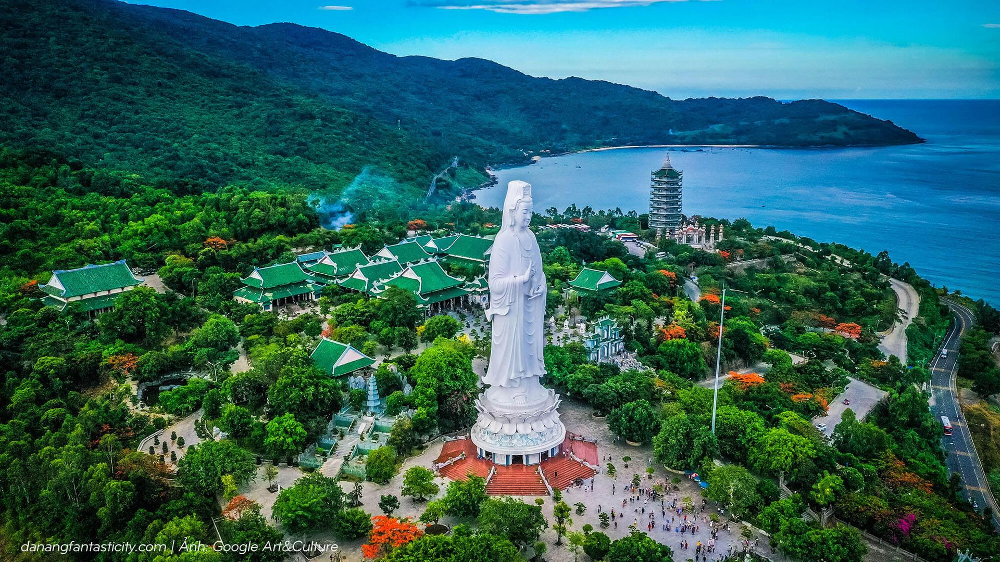

In the heart of Vietnam, Da Nang boasts a skyline adorned with breathtaking bridges that seamlessly blend beauty and cultural significance. These architectural marvels not only serve as vital transportation links but also stand as iconic landmarks, each with its own story to tell.
Linh Ung Pagoda, situated atop the scenic Son Tra Peninsula in Da Nang, is a spiritual haven featuring the awe-inspirin g Lady Buddha statue, the tallest of its kind in Vietnam. Adorne d with a blend of modern and traditional Buddhist architecture, the pagoda offers a serene escape with breathtaking views of Da Nang City and the East Sea. This cultural gem invites visitors to immerse themselves in tranquility, appreciate the intricate details of its design, and experience the profound spirituality of this revered destination.
In the heart Vietnam, Da Nang boasts a skyline adorned with breathtaking bridges that seamlessly blend beauty and cultural significance. These architectural marvels not only serve as vital transportation links but also stand as iconic landmarks, each with its own story to tell.
Linh Ung Pagoda, situated atop the scenic Son Tra Peninsula in Da Nang, is a spiritual haven featuring the awe-inspirin g Lady Buddha statue, the tallest of its kind in Vietnam. Adorne d with a blend of modern and traditional Buddhist architecture, the pagoda offers a serene escape with breathtaking views of Da Nang City and the East Sea. This cultural gem invites visitors to immerse themselves in tranquility, appreciate the intricate details of its design, and experience the profound spirituality of this revered destination.
Linh Ung Pagoda, situated atop the scenic Son Tra Peninsula in Da Nang, is a spiritual haven featuring the awe-inspirin g Lady Buddha statue, the tallest of its kind in Vietnam. Adorne d with a blend of modern and traditional Buddhist architecture, the pagoda offers a serene escape with breathtaking views of Da Nang City and the East Sea. This cultural gem invites visitors to immerse themselves in tranquility, appreciate the intricate details of its design, and experience the profound spirituality of this revered destination.
Beyond the well-known pagodas that grace Da Nang's landscape, the city unfolds an intricate tapestry of spirituality with an additional 30 pagodas waiting to be explored. Each pagoda adds a unique brushstroke to this spiritual mosaic, showcasing varied architectural styles and cultural significance. From hidden gems tucked away in the city's nooks to those perched on scenic hillsides, these lesser-known pagodas offer a deeper insight into the spiritual fabric of Da Nang. Embark on a journey of discovery as you unveil the stories, rituals, and architectural wonders woven into the sacred spaces of these 30 pagodas, making Da Nang a truly enchanting city of spiritual exploration. Embarking on this journey of exploration unveils the intricate stories, time-honored rituals, and architectural wonders intricately woven into the sacred spaces of these lesser-known pagodas. As you traverse the city's pathways, you'll encounter sanctuaries that narrate tales of resilience, reflect on the harmony between nature and spirituality, and offer a tranquil escape from the hustle and bustle. Da Nang emerges not just as a city but as a living testament to spiritual explorat ion, where every pagoda invites you to immerse yoursel f in its unique energy and cultural heritage.